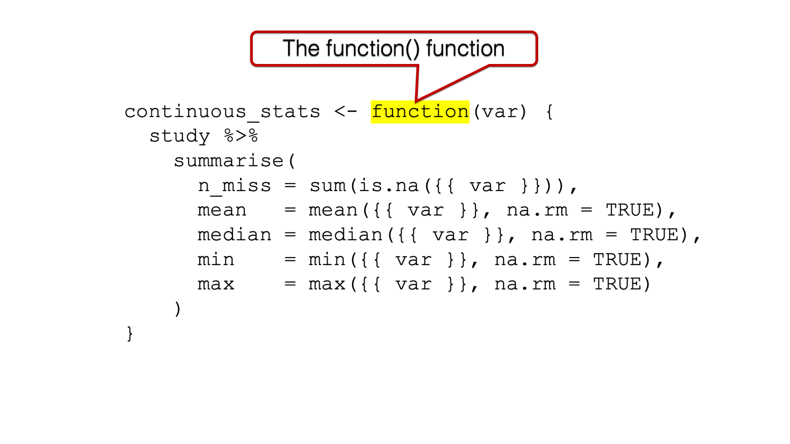
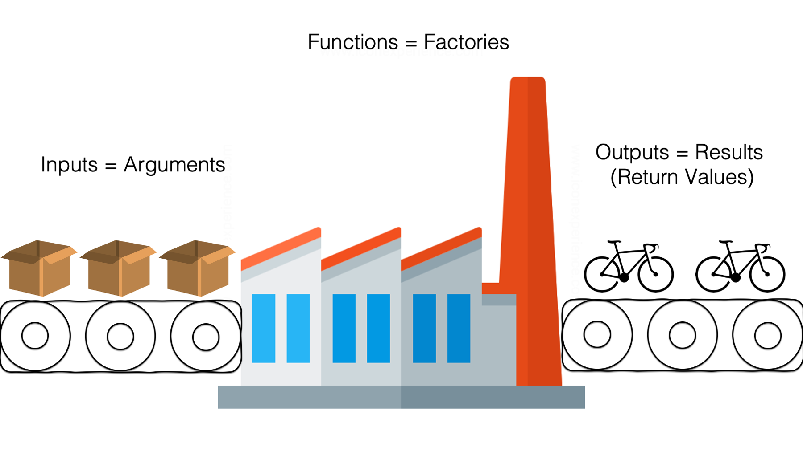
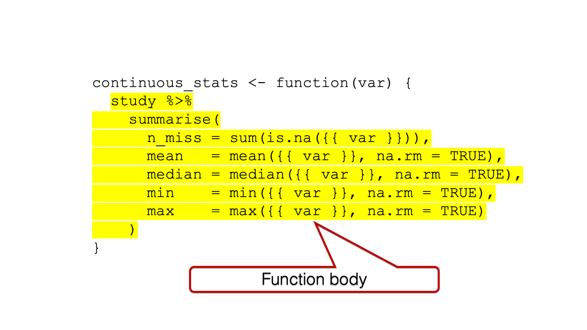
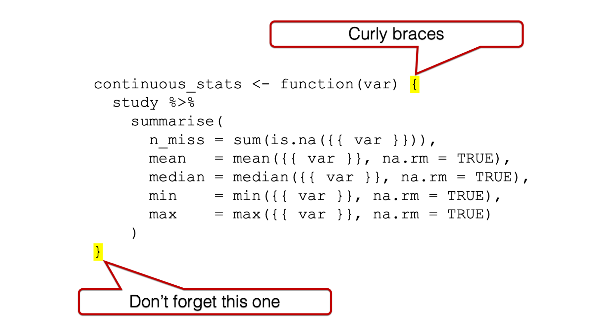
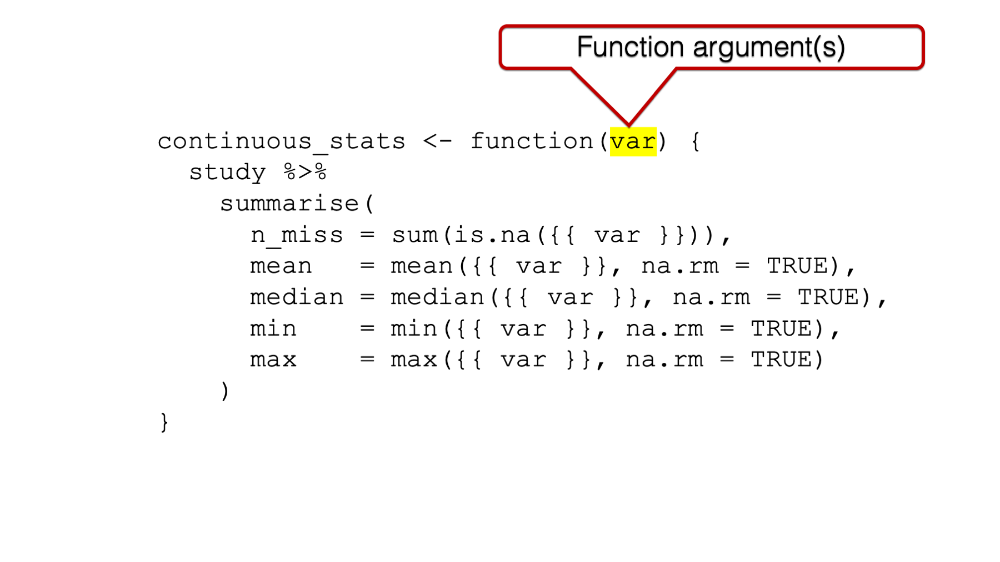
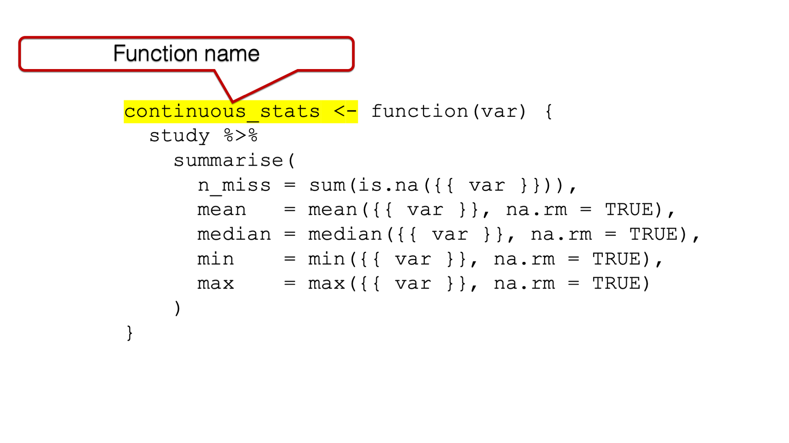

library(dplyr)34 Writing Functions
Have you noticed how we will often calculate the same statistical measures for many different variables in our data? For example, let’s say that we have some pretty standard data about some study participants that looks like this:
study <- tibble(
age = c(32, 30, 32, 29, 24, 38, 25, 24, 48, 29, 22, 29, 24, 28, 24, 25,
25, 22, 25, 24, 25, 24, 23, 24, 31, 24, 29, 24, 22, 23, 26, 23,
24, 25, 24, 33, 27, 25, 26, 26, 26, 26, 26, 27, 24, 43, 25, 24,
27, 28, 29, 24, 26, 28, 25, 24, 26, 24, 26, 31, 24, 26, 31, 34,
26, 25, 27, NA),
age_group = c(2, 2, 2, 1, 1, 2, 1, 1, 2, 1, 1, 1, 1, 1, 1, 1, 1, 1, 1, 1, 1,
1, 1, 1, 2, 1, 1, 1, 1, 1, 1, 1, 1, 1, 1, 2, 1, 1, 1, 1, 1, 1,
1, 1, 1, 2, 1, 1, 1, 1, 1, 1, 1, 1, 1, 1, 1, 1, 1, 2, 1, 1, 2,
2, 1, 1, 1, NA),
gender = c(2, 1, 1, 2, 1, 1, 1, 2, 2, 2, 1, 1, 2, 1, 1, 1, 1, 2, 2, 1, 1,
1, 1, 2, 1, 1, 2, 1, 1, 1, 2, 1, 1, 2, 2, 1, 2, 2, 1, 2, 2, 1,
1, 1, 1, 1, 1, 1, 1, 2, 2, 1, 1, 1, 1, 2, 2, 1, 1, 2, 1, 2, 1,
1, 1, 2, 1, NA),
ht_in = c(70, 63, 62, 67, 67, 58, 64, 69, 65, 68, 63, 68, 69, 66, 67, 65,
64, 75, 67, 63, 60, 67, 64, 73, 62, 69, 67, 62, 68, 66, 66, 62,
64, 68, NA, 68, 70, 68, 68, 66, 71, 61, 62, 64, 64, 63, 67, 66,
69, 76, NA, 63, 64, 65, 65, 71, 66, 65, 65, 71, 64, 71, 60, 62,
61, 69, 66, NA),
wt_lbs = c(216, 106, 145, 195, 143, 125, 138, 140, 158, 167, 145, 297, 146,
125, 111, 125, 130, 182, 170, 121, 98, 150, 132, 250, 137, 124,
186, 148, 134, 155, 122, 142, 110, 132, 188, 176, 188, 166, 136,
147, 178, 125, 102, 140, 139, 60, 147, 147, 141, 232, 186, 212,
110, 110, 115, 154, 140, 150, 130, NA, 171, 156, 92, 122, 102,
163, 141, NA),
bmi = c(30.99, 18.78, 26.52, 30.54, 22.39, 26.12, 23.69, 20.67, 26.29,
25.39, 25.68, 45.15, 21.56, 20.17, 17.38, 20.8, 22.31, 22.75,
26.62, 21.43, 19.14, 23.49, 22.66, 32.98, 25.05, 18.31, 29.13,
27.07, 20.37, 25.01, 19.69, 25.97, 18.88, 20.07, NA, 26.76,
26.97, 25.24, 20.68, 23.72, 24.82, 23.62, 18.65, 24.03, 23.86,
10.63, 23.02, 23.72, 20.82, 28.24, NA, 37.55, 18.88, 18.3,
19.13, 21.48, 22.59, 24.96, 21.63, NA, 29.35, 21.76, 17.97,
22.31, 19.27, 24.07, 22.76, NA),
bmi_3cat = c(3, 1, 2, 3, 1, 2, 1, 1, 2, 2, 2, 3, 1, 1, 1, 1, 1, 1, 2, 1, 1,
1, 1, 3, 2, 1, 2, 2, 1, 2, 1, 2, 1, 1, NA, 2, 2, 2, 1, 1, 1, 1,
1, 1, 1, 1, 1, 1, 1, 2, NA, 3, 1, 1, 1, 1, 1, 1, 1, NA, 2, 1,
1, 1, 1, 1, 1, NA)
) %>%
mutate(
age_group = factor(age_group, labels = c("Younger than 30", "30 and Older")),
gender = factor(gender, labels = c("Female", "Male")),
bmi_3cat = factor(bmi_3cat, labels = c("Normal", "Overweight", "Obese"))
) %>%
print()# A tibble: 68 × 7
age age_group gender ht_in wt_lbs bmi bmi_3cat
<dbl> <fct> <fct> <dbl> <dbl> <dbl> <fct>
1 32 30 and Older Male 70 216 31.0 Obese
2 30 30 and Older Female 63 106 18.8 Normal
3 32 30 and Older Female 62 145 26.5 Overweight
4 29 Younger than 30 Male 67 195 30.5 Obese
5 24 Younger than 30 Female 67 143 22.4 Normal
6 38 30 and Older Female 58 125 26.1 Overweight
7 25 Younger than 30 Female 64 138 23.7 Normal
8 24 Younger than 30 Male 69 140 20.7 Normal
9 48 30 and Older Male 65 158 26.3 Overweight
10 29 Younger than 30 Male 68 167 25.4 Overweight
# ℹ 58 more rowsWhen we have data like this, it’s pretty common to calculate something like the number of missing values, mean, median, min, and max for all of the continuous variables. So, we might use the following code to calculate these measures:
study %>%
summarise(
n_miss = sum(is.na(age)),
mean = mean(age, na.rm = TRUE),
median = median(age, na.rm = TRUE),
min = min(age, na.rm = TRUE),
max = max(age, na.rm = TRUE)
)# A tibble: 1 × 5
n_miss mean median min max
<int> <dbl> <dbl> <dbl> <dbl>
1 1 26.9 26 22 48Great! Next, we want to do the same calculations for ht_in. Of course, we don’t want to type everything in that code chunk again, so we copy and paste. And change all the instances of age to ht_in:
study %>%
summarise(
n_miss = sum(is.na(ht_in)),
mean = mean(ht_in, na.rm = TRUE),
median = median(ht_in, na.rm = TRUE),
min = min(ht_in, na.rm = TRUE),
max = max(ht_in, na.rm = TRUE)
)# A tibble: 1 × 5
n_miss mean median min max
<int> <dbl> <dbl> <dbl> <dbl>
1 3 66.0 66 58 76Now, let’s do the same calculations for wt_lbs and bmi. Again, we will copy and paste, and change the variable name as needed:
study %>%
summarise(
n_miss = sum(is.na(wt_lbs)),
mean = mean(wt_lbs, na.rm = TRUE),
median = median(wt_lbs, na.rm = TRUE),
min = min(ht_in, na.rm = TRUE),
max = max(wt_lbs, na.rm = TRUE)
)# A tibble: 1 × 5
n_miss mean median min max
<int> <dbl> <dbl> <dbl> <dbl>
1 2 148. 142. 58 297study %>%
summarise(
n_miss = sum(is.na(bmi)),
mean = mean(bmi, na.rm = TRUE),
median = median(bmi, na.rm = TRUE),
min = min(bmi, na.rm = TRUE),
max = max(bmi, na.rm = TRUE)
)# A tibble: 1 × 5
n_miss mean median min max
<int> <dbl> <dbl> <dbl> <dbl>
1 4 23.6 22.9 10.6 45.2And, we’re done!
However, there’s a problem. Did you spot it? We accidentally forgot to change ht_in to wt_lbs in the min calculation above. Therefore, our results incorrectly indicate that the minimum weight was 58 lbs. Part of the reason for making this mistake in the first place is that there is a fair amount of visual clutter in each code chunk. In other words, it’s hard to quickly scan each chunk and see only the elements that are changing.
Additionally, each code chunk was about 8 lines of code. Even with only 4 variables, that’s still 32 lines. We can improve on this code by writing our own function. That’s exactly what we will do in the code chunk below. For now, don’t worry if you don’t understand how the code works. We will dissect it later.
continuous_stats <- function(var) {
study %>%
summarise(
n_miss = sum(is.na({{ var }})),
mean = mean({{ var }}, na.rm = TRUE),
median = median({{ var }}, na.rm = TRUE),
min = min({{ var }}, na.rm = TRUE),
max = max({{ var }}, na.rm = TRUE)
)
}Now, let’s use the function we just created above to once again calculate the descriptive measures we are interested in.
continuous_stats(age)# A tibble: 1 × 5
n_miss mean median min max
<int> <dbl> <dbl> <dbl> <dbl>
1 1 26.9 26 22 48continuous_stats(ht_in)# A tibble: 1 × 5
n_miss mean median min max
<int> <dbl> <dbl> <dbl> <dbl>
1 3 66.0 66 58 76continuous_stats(wt_lbs)# A tibble: 1 × 5
n_miss mean median min max
<int> <dbl> <dbl> <dbl> <dbl>
1 2 148. 142. 60 297continuous_stats(bmi)# A tibble: 1 × 5
n_miss mean median min max
<int> <dbl> <dbl> <dbl> <dbl>
1 4 23.6 22.9 10.6 45.2Pretty cool, right? We reduced 32 lines of code to 13 lines of code! Additionally, it’s very easy to quickly scan our code and see that the only thing changing from chunk-to-chunk is the name of the variable that we are passing to our function and ensure that it is actually changing. As an added bonus, because we’ve strategically given our function an informative name, the intent behind what we are trying to accomplish is clearer now – we are calculating summary statistics about our continuous variables.
Hopefully, this little demonstration has left you feeling like writing your own functions can be really useful, and maybe even kind of fun. We’re going to get into the nuts and bolts of how to write your own functions shortly, but first let’s briefly discuss when to write your own functions.
34.1 When to write functions
Hadley Wickham, prolific R developer and teacher says, “You should consider writing a function whenever you’ve copied and pasted a block of code more than twice (i.e. you now have three copies of the same code).”1 We completely agree with this general sentiment. We’ll only amend our advice to you slightly. Specifically, you should consider using an appropriate method for repeating operations whenever you’ve copied and pasted a block of code more than twice. In other words, writing a function is not the only option available to us when we notice ourselves copying and pasting code.
34.2 How to write functions
Now, the fun part – writing our own functions. Writing functions can seem intimidating to many people at first. However, the basics are actually pretty simple.
34.2.1 The function() function
It all starts with the function() function. This is how you tell R that you are about to write your own function.

If you think back to the chapter on Speaking R’s language, we talked about the analogy that is sometimes drawn between functions and factories.

To build on that analogy, thefunction() function is sort of like the factory building. Without it, there is no factory, but an empty building alone doesn’t do anything interesting:
function()Error in parse(text = input): <text>:2:0: unexpected end of input
1: function()
^In order to build our bicycles, we need to add some workers and equipment to our empty factory building. The R function equivalent to the workers and equipment is the function body.

And just like the factory needs doors to contain our workers and equipment and keep them safe (This is admittedly a bit of a reach, but just go with it), our function body needs to be wrapped with curly braces.

We already talked about how the values we pass to arguments are raw material inputs that go into the factory.

In the bicycle factory example, the raw materials were steel and rubber. In the function displayed above, the raw materials are variables.
If we want to be able to call our function (i.e., use it) later, then we have to have some way to refer to it. Therefore, we will assign our function a name.

34.2.2 The function writing process
So, we have some idea about why writing our own functions can be a good idea. We have some idea about when to write functions (i.e., don’t repeat yourself… more than twice). And, we now know what the basic components of functions are. They are the function() function, the function body (wrapped in curly braces), the function argument(s), and the function name. But, if this is your first time being exposed to functions, then you may still be feeling like you aren’t quite sure how to get started with writing your own. So, here’s a little example of how a function writing workflow could go.
First, let’s simulate some new data for this example. Let’s say we have two data frames that contain first and last names:
people_1 <- tribble(
~id_1, ~name_first_1, ~name_last_1, ~street_1,
1, "Easton", NA, "Alameda",
2, "Elias", "Salazar", "Crissy Field",
3, "Colton", "Fox", "San Bruno",
4, "Cameron", "Warren", "Nottingham",
5, "Carson", "Mills", "Jersey",
6, "Addison", "Meyer", "Tingley",
7, "Aubrey", "Rice", "Buena Vista",
8, "Ellie", "Schmidt", "Division",
9, "Robert", "Garza", "Red Rock",
10, "Stella", "Daniels", "Holland"
) %>%
print()# A tibble: 10 × 4
id_1 name_first_1 name_last_1 street_1
<dbl> <chr> <chr> <chr>
1 1 Easton <NA> Alameda
2 2 Elias Salazar Crissy Field
3 3 Colton Fox San Bruno
4 4 Cameron Warren Nottingham
5 5 Carson Mills Jersey
6 6 Addison Meyer Tingley
7 7 Aubrey Rice Buena Vista
8 8 Ellie Schmidt Division
9 9 Robert Garza Red Rock
10 10 Stella Daniels Holland people_2 <- tribble(
~id_2, ~name_first_2, ~name_last_2, ~street_2,
1, "Easton", "Stone", "Alameda",
2, "Elas", "Salazar", "Field",
3, NA, "Fox", NA,
4, "Cameron", "Waren", "Notingham",
5, "Carsen", "Mills", "Jersey",
6, "Adison", NA, NA,
7, "Aubrey", "Rice", "Buena Vista",
8, NA, "Schmidt", "Division",
9, "Bob", "Garza", "Red Rock",
10, "Stella", NA, "Holland"
) %>%
print()# A tibble: 10 × 4
id_2 name_first_2 name_last_2 street_2
<dbl> <chr> <chr> <chr>
1 1 Easton Stone Alameda
2 2 Elas Salazar Field
3 3 <NA> Fox <NA>
4 4 Cameron Waren Notingham
5 5 Carsen Mills Jersey
6 6 Adison <NA> <NA>
7 7 Aubrey Rice Buena Vista
8 8 <NA> Schmidt Division
9 9 Bob Garza Red Rock
10 10 Stella <NA> Holland In this scenario, we want to see if first name, last name, and street name match at each ID between our data frames. More specifically, we want to combine the two data frames into a single data frame and create three new dummy variables that indicate whether first name, last name, and address match respectively. Let’s go ahead and combine the data frames now:
people <- people_1 %>%
bind_cols(people_2) %>%
print()# A tibble: 10 × 8
id_1 name_first_1 name_last_1 street_1 id_2 name_first_2 name_last_2
<dbl> <chr> <chr> <chr> <dbl> <chr> <chr>
1 1 Easton <NA> Alameda 1 Easton Stone
2 2 Elias Salazar Crissy Field 2 Elas Salazar
3 3 Colton Fox San Bruno 3 <NA> Fox
4 4 Cameron Warren Nottingham 4 Cameron Waren
5 5 Carson Mills Jersey 5 Carsen Mills
6 6 Addison Meyer Tingley 6 Adison <NA>
7 7 Aubrey Rice Buena Vista 7 Aubrey Rice
8 8 Ellie Schmidt Division 8 <NA> Schmidt
9 9 Robert Garza Red Rock 9 Bob Garza
10 10 Stella Daniels Holland 10 Stella <NA>
# ℹ 1 more variable: street_2 <chr>Now, our first attempt at creating the dummy variables might look something like this:
people %>%
mutate(
name_first_match = name_first_1 == name_first_2,
name_last_match = name_last_1 == name_last_2,
street_match = street_1 == street_2
) %>%
# Order like columns next to each other for easier comparison
select(id_1, starts_with("name_f"), starts_with("name_l"), starts_with("s"))# A tibble: 10 × 10
id_1 name_first_1 name_first_2 name_first_match name_last_1 name_last_2
<dbl> <chr> <chr> <lgl> <chr> <chr>
1 1 Easton Easton TRUE <NA> Stone
2 2 Elias Elas FALSE Salazar Salazar
3 3 Colton <NA> NA Fox Fox
4 4 Cameron Cameron TRUE Warren Waren
5 5 Carson Carsen FALSE Mills Mills
6 6 Addison Adison FALSE Meyer <NA>
7 7 Aubrey Aubrey TRUE Rice Rice
8 8 Ellie <NA> NA Schmidt Schmidt
9 9 Robert Bob FALSE Garza Garza
10 10 Stella Stella TRUE Daniels <NA>
# ℹ 4 more variables: name_last_match <lgl>, street_1 <chr>, street_2 <chr>,
# street_match <lgl>Let’s take a moment to review the results we got. In row 1 we see that “Easton” and “Easton” match, and the value for name_first_match is TRUE. So far, so good. In row 2, we see that “Elias” and “Ela” do not match, and the value for name_first_match is FALSE. That is also the result we wanted. In row 3, we see that “Colton” and “NA” do not match; however, the value in name_first_match is NA. In this case, this is not the result we want. We have a problem. That brings us to the first step in this workflow.
34.2.2.1 Spotting a need for a function
In some cases, the need is purely repetitive code – like the example at the beginning of this chapter. In other cases, like this one, a built-in R function is not giving the the desired result.
Here is the basic problem in this particular case:
1 == 1[1] TRUE1 == 2[1] FALSE1 == NA[1] NANA == 2[1] NANA == NA[1] NAThe equality operator (==) always returns NA when one, or both, of the values being tested is NA. Often, that is exactly the result we want. In this case, however, it is not. Fortunately, we can get the result we want by writing our own function. That brings us to step 2 in the workflow.
34.2.2.2 Making the code work for one specific case
Don’t try to solve the entire problem for every case right out of the gate. Instead, solve one problem for a specific case, and then build on that win! Let’s start by trying to figure out how to get the result we want for name_first_match in row 3 of our example data.
"Colton" == NA[1] NAThis is essentially what we already had above. But, we want to change our result from NA to FALSE. Let’s start by saving the result to an object that we can manipulate:
result <- "Colton" == NA
result[1] NASo, now the value returned by the equality comparison is saved to an object named result. Let’s go ahead and use a conditional operation to change the value of result to FALSE when it is initially NA, and leave it alone otherwise:
result <- "Colton" == NA
result <- if_else(is.na(result), FALSE, result)
result[1] FALSEAlright! This worked! At least, it worked for this case. That brings us to step 3 in the workflow.
34.2.2.3 Making the solution into a “function”
How can this be done? Well, first we start with a skeleton of the function components we discussed above. They are the function() function, the function body (wrapped in curly braces), and the function name. At the moment, we don’t have any arguments. We’ll explain why soon.
is_match <- function() {
}Then, we literally copy the solution from above and paste it into the function body, making sure to indent the code. Next, we need to run the code chunk to create the function. After doing so, you should see the function appear in your global environment. Keep in mind, this creates the function so that we can use it later, but the function isn’t immediately run.
is_match <- function() {
result <- "Colton" == NA
result <- if_else(is.na(result), FALSE, result)
result
}Now, let’s test out our shiny new function. To run the function, we can simply type the function name, with the parentheses, and run the code chunk.
is_match()[1] FALSEAnd, it works! When we ask R to run a function we are really asking R to run the code in the body of the function. In this case, we know that the code in the body of the function results in the value FALSE because this results in FALSE:
result <- "Colton" == NA
result <- if_else(is.na(result), FALSE, result)
result[1] FALSEAnd all we did was stick that code in the function body. Said another way, this:
result <- "Colton" == NA
result <- if_else(is.na(result), FALSE, result)
resultand this:
is_match()mean essentially the same thing to R now if that makes sense. Hang in there even if it still isn’t quite clear. We’ll get more practice soon.
At this point, you may be wondering about the function arguments, and why there aren’t any. Well, we can try passing a value to our is_match() function. How about we pass the name “Easton” from the first row of our example data above:
is_match(name = "Easton")Error in is_match(name = "Easton"): unused argument (name = "Easton")But, we get an error. R doesn’t know what the name argument is or what to do with the values we are passing to it. That’s because we never said anything about any arguments when we created the is_match() function. We left the parentheses where the function arguments go empty.
is_match <- function() {
result <- "Colton" == NA
result <- if_else(is.na(result), FALSE, result)
result
}Let’s create is_match() again, but this time, let’s add an argument:
is_match <- function(name) {
result <- "Colton" == NA
result <- if_else(is.na(result), FALSE, result)
result
}is_match(name = "Easton")[1] FALSEHmmm, let’s add another argument and see what happens:
is_match <- function(name_1, name_2) {
result <- "Colton" == NA
result <- if_else(is.na(result), FALSE, result)
result
}is_match(name_1 = "Easton", name_2 = "Easton")[1] FALSEIt looks as though the arguments we are adding don’t have any effect on our returned value. That’s because they don’t. We oversimplified how function arguments work just a little bit in our factory analogy earlier. When we add arguments to function our definition (i.e., when we create the function) it’s really more like adding a loading dock to our factory. It’s a place where our factory can receive raw materials. However, there still needs to be equipment inside the factory that can use those raw materials. If we drop off a load of rubber at our bicycle factory, but there’s no machine inside our bicycle factory that uses rubber, then we wouldn’t expect dropping off the rubber to have any effect on the outputs coming out of the factory.
We have similar situation above. We dropped the name “Easton” off at our is_match() function, but nothing inside our is_match() function can use the name “Easton”. There’s no machinery to plug that name into. That brings us to step 4 in the workflow.
34.2.2.4 Start generalizing the function
As it stands right now, our is_match() function can’t accept any new names. The only result we will ever get from the current version of our is_match() function is the result of testing the equality between the values “Colton” and NA, and then converting that value to FALSE. This isn’t a problem if the only values we care about comparing are “Colton” and NA, but of course, that isn’t the case. We need a way to make our function work for other values too. Said another way, we need to make our function more general.
As you may have guessed already, that will require us creating an argument to receive input values and a place to use those input values in the function body. Let’s start by adding a first_name argument:
is_match <- function(first_name) {
result <- first_name == NA
result <- if_else(is.na(result), FALSE, result)
result
}is_match(first_name = "Easton")[1] FALSE👆Here’s what we did above:
We once again created our
is_match()function. However, this time we created it with a single argument –first_name. We didn’t have to name the argumentfirst_name. We could have named it anything that we can name any other variable in R. But,first_nameseemed like a reasonable choice since the value we want to pass to this argument is a person’s first name. Thefirst_nameargument will receive the first name values that we want to pass to this function.We replaced the constant value “Colton” in the function body with the variable
first_name. It isn’t a coincidence that the name of the variablefirst_namematches the name of the argumentfirst_name. R will take whatever value we give to thefirst_nameargument and pass it to the variable with a matching name inside the function body. Then, R will run the code inside the function body as though the variable is the value we passed to it.
So, when we type:
is_match(first_name = "Easton")[1] FALSER sees:
result <- "Easton" == NA
result <- if_else(is.na(result), FALSE, result)
result[1] FALSEIt looks like our is_match() function is still going to return a value of FALSE no matter what value we pass to the first_name function. That’s because no matter what value we pass to result <- first_name == NA, result will equal NA. Then, result <- if_else(is.na(result), FALSE, result) will change the value of result to FALSE. So, we still need to make our function more general. As you may have guessed, we can do that by adding a second argument:
is_match <- function(first_name, first_name) {
result <- first_name == first_name
result <- if_else(is.na(result), FALSE, result)
result
}Error: repeated formal argument 'first_name' (<input>:1:34)Uh, oh! We got an error. This error is telling us that each function argument must have a unique name. Let’s try again:
is_match <- function(first_name_1, first_name_2) {
result <- first_name_1 == first_name_2
result <- if_else(is.na(result), FALSE, result)
result
}is_match(first_name_1 = "Easton", first_name_2 = "Colton")[1] FALSEIs this working or is our function still just returning FALSE no matter what we pass to the arguments? Let’s try to pass “Easton” to first_name_1 and first_name_2 and see what happens:
is_match(first_name_1 = "Easton", first_name_2 = "Easton")[1] TRUEWe got a TRUE! That’s exactly the result we wanted! Let’s do one final check. Let’s see what happens when we pass NA to our is_match() function:
is_match(first_name_1 = "Easton", first_name_2 = NA)[1] FALSEPerfect! It looks like our function is finally ready to help us solve the problem we identified way back at step one. But, while we are talking about generalizing our function, shouldn’t we go ahead and use more general names for our function arguments? We were only using first names when we were developing our function, but we are going to use our function to compare last names and street names as well. In fact, our function will compare any two values and tell us whether or not they are a match. So, let’s go ahead and change the argument names to value_1 and value_2:
is_match <- function(value_1, value_2) {
result <- value_1 == value_2 # Don't forget to change the variable names here!!
result <- if_else(is.na(result), FALSE, result)
result
}Now, we are ready to put our function to work testing whether or not the first name, last name, and street name match at each ID between our data frames:
people %>%
mutate(
name_first_match = is_match(name_first_1, name_first_2),
name_last_match = is_match(name_last_1, name_last_2),
street_match = is_match(street_1, street_2)
) %>%
# Order like columns next to each other for easier comparison
select(id_1, starts_with("name_f"), starts_with("name_l"), starts_with("s"))# A tibble: 10 × 10
id_1 name_first_1 name_first_2 name_first_match name_last_1 name_last_2
<dbl> <chr> <chr> <lgl> <chr> <chr>
1 1 Easton Easton TRUE <NA> Stone
2 2 Elias Elas FALSE Salazar Salazar
3 3 Colton <NA> FALSE Fox Fox
4 4 Cameron Cameron TRUE Warren Waren
5 5 Carson Carsen FALSE Mills Mills
6 6 Addison Adison FALSE Meyer <NA>
7 7 Aubrey Aubrey TRUE Rice Rice
8 8 Ellie <NA> FALSE Schmidt Schmidt
9 9 Robert Bob FALSE Garza Garza
10 10 Stella Stella TRUE Daniels <NA>
# ℹ 4 more variables: name_last_match <lgl>, street_1 <chr>, street_2 <chr>,
# street_match <lgl>Works like a charm! Notice, however, that we still have a lot of repetition in the code above. Unfortunately, we still don’t have all the tools we need to remove it. But, we will soon.
At this point in the chapter, the hope is that you’re developing a feel for how to write your own functions and why that might be useful. With R, it’s possible to write functions that are very complicated. But, hopefully, the examples above show you that functions don’t have to be complicated to be useful. In that spirit, we will not dive too much deeper into the details and technicalities of function writing at this point. However, there are a few details that should be at least mentioned so that you aren’t caught off guard by them as you begin to write your own functions. We will touch on each below, and then wrap up this chapter with resources for those of you who wish to dive deeper.
34.3 Giving your function arguments default values
We’ve been introducing new functions to you all throughout the book so far. Each time, we try to discuss some, or all, of the function’s arguments – including the default values that are passed to the arguments. Most of you have probably developed some sort of intuitive understanding of just what it meant for the argument to have a default value. However, this seems like an appropriate point in the book to talk about default arguments a little more explicitly and show you how to add them to the functions you write.
Let’s say that we want to write a function that will increase the value of a number, or set of numbers, incrementally. We may start with something like this:
increment <- function(x) {
x + 1
}👆Here’s what we did above:
- We created our own function that will increase the value of a number, or set of numbers, incrementally. Specifically, when we pass a number to the
xargument the value of that number plus one will be returned.
Let’s go ahead and use our function now:
increment(2)[1] 3👆Here’s what we did above:
- We passed the value
2to thexargument of ourincrement()function. Thexargument then passed the value2to thexvariable in the function body. Said another way, R replaced thexvariable in the function body with the value2. Then, R executed the code in the function body. In this case, the code in the function body added the values2and1together. Finally, the function returned the value3.
Believe it or not, our simple little increment() function is a full-fledged R function. It is just as legitimate as any other R function we’ve used in this book. But, let’s go ahead and add a little more to its functionality. For example, maybe we want to be able to increment by values other than just one. How might we do that?
Hopefully, your first thought was to replace the constant value 1 in the function body with a variable that can have any number passed to it. That’s exactly what we will do next:
increment <- function(x, by) {
x + by
}👆Here’s what we did above:
- We created our own function that will increase the value of a number, or set of numbers, incrementally. Specifically, when we pass a number to the
xargument the value of that number will be incremented by the value passed to thebyargument.
What value should increment() return if we pass 2 to the x argument and 2 to the by argument?
increment(2, 2)[1] 4Hopefully, that’s what you were expecting. But, now what happens if we don’t pass any value to the by argument?
increment(2)Error in increment(2): argument "by" is missing, with no defaultWe get an error saying that there wasn’t any value passed to the by argument, and the by argument doesn’t have a default value. But, we are really lazy, and it takes a lot of work to pass a value to the by argument every time we use the increment() function. Plus, we almost always only want to increment our numbers by one. In this case, our best course of action is to set the default value of by to 1. Fortunately for us, doing so is really easy!
increment <- function(x, by = 1) {
x + by
}👆Here’s what we did above:
We created our own function that will increase the value of a number, or set of numbers, incrementally. Specifically, when we pass a number to the
xargument the value of that number will be incremented by the value passed to thebyargument. The default value passed to thebyargument is1. Said another way, R will pretend that we passed the value1to thebyargument if we don’t explicitly pass a number other than1to thebyargument.All we had to do to give
bya default value was type=followed by the value (i.e.,1) when we created the function.
Now let’s try out our latest version of increment():
# Default value
increment(2)[1] 3# Passing the value 1
increment(2, 1)[1] 3# Passing a value other than 1
increment(2, 2)[1] 4# Passing a vector of numbers to the x argument
increment(c(1, 2, 3), 2)[1] 3 4 534.4 The values your functions return
When we run our functions, they typically execute each line of code in the function body, one after another, starting with the first line and ending at the last line. Therefore, the value that your function returns (i.e., the thing that comes out of the factory) is typically dictated by the last line of code in your function body.
To explain this further, let’s take another look at our is_match() function:
is_match <- function(value_1, value_2) {
result <- value_1 == value_2 # Do this first
result <- if_else(is.na(result), FALSE, result) # Then this
result # Then this
}Why did we type that third line of code? Afterall, that line of code isn’t doing anything. Well, let’s see what happens if we take it out:
is_match <- function(value_1, value_2) {
result <- value_1 == value_2
result <- if_else(is.na(result), FALSE, result)
}is_match("Easton", "Easton")It appears as though nothing happened! Did our function break?
Let’s think about what typically happens when we use R’s built-in functions. When we don’t assign the value returned by the function to an object, then the returned value is printed to the screen:
sum(1, 1)[1] 2But, when we do assign the value returned by the function to an object, nothing is printed to the screen:
x <- sum(1, 1)The same thing is happening in our function above. The last line of our function body is assigning a value (i.e., TRUE or FALSE) to the variable result. Just like x <- sum(1, 1) didn’t print to the screen, result <- if_else(is.na(result), FALSE, result) doesn’t print to the screen when we run is_match("Easton", "Easton") using this version of is_match().
However, we can see in the example below that result of the operations being executed inside the function body can still be assigned to an object in our global environment, and we can print the contents of that object to screen:
x <- is_match("Easton", "Easton")
x[1] TRUEIf all of that seems confusing, here is the bottom line. In general, it’s a best practice for your function to print its return value to the screen. You can do this in one of three ways:
1️⃣ The value that results from the code in the last line of the function body isn’t assigned to anything. We saw an example of this above with our increment() function:
increment <- function(x, by = 1) {
x + by # Last line doesn't assign the value to an object
}increment(2)[1] 32️⃣ If you assign values to objects inside your function, then type the name of the object that contains the value you want your function to return on the last line of the function body. We saw an example of this with our is_match() function. We can also amend our increment() function follow this pattern:
increment <- function(x, by = 1) {
out <- x + by # Now we assign the value to an object
out # Type object name on last line of the function body
}increment(2)[1] 33️⃣ Use the return() function.
increment <- function(x, by = 1) {
out <- x + by
return(out)
}increment(2)[1] 3So, which method should you use? Well, for all but the simplest functions (like the one above) method 1 is not considered good coding practice. Method 3 may seem like it’s the most explicit; however, it’s actually considered best practice to use the return() function only when you want your function to return its value before R reaches the last line of the function body. For example, let’s add another line of code to our function body that adds another 1 to the value of out:
increment <- function(x, by = 1) {
out <- x + by
out <- out + 1 # Adding an extra 1
return(out) # Return still in the last line
}increment(2)[1] 4Now, let’s move return(out) to the second line of the function body – above the line of code that adds an additional 1 to the value of out:
increment <- function(x, by = 1) {
out <- x + by
return(out) # Return in the second line above adding an extra 1
out <- out + 1 # Adding an extra 1
}increment(2)[1] 3In the example above, the last 1 wasn’t added to the value of out because we used the return() function. Said another way, increment() returned the value of out “early”, and the last line of the function body was never executed.
In the example above, using the return() function in the way that we did obviously makes no sense. It was just meant to illustrate what the return() function can do. The return() function doesn’t actually become useful until we start writing more complex functions. But, because the return() function has the special ability to end the execution of the function body early, it’s considered a best practice to only use it for that purpose.
Therefore, in most situations, you will want to use method 2 (i.e., object name on last line) when writing your own functions.
One final note before we move on to the next section. Notice that we never used the print() function on the last line of our code. This was intentional. Using print() will give you the result you expect when you don’t assign the value that your function returns to an object in your global environment:
increment <- function(x, by = 1) {
out <- x + by
print(out)
}increment(2)[1] 3But, it will not give you the result you want if you do assign the value that your function returns to an object in your global environment:
increment <- function(x, by = 1) {
out <- x + by
print(out)
}x <- increment(2)[1] 3x[1] 334.5 Lexical scoping and functions
If you have been following along with the code above on your computer, you may have noticed that the objects we create inside our functions do not appear in our global environment. If you haven’t been following along, you may want to jump on your computer really quickly for this section (or just take our word for it).
The reason the objects we created inside our functions do not appear in our global environment is that R actually has multiple environments were objects can live. Additionally, R uses something called lexical scoping rules to look for the objects you refer to in your R code. The vast majority of the time, we won’t need to concern ourselves much with any of these other environments or the lexical scoping rules. However, function writing does require us to have some minimal understanding of these concepts. At the very least, you should be aware of the following when writing your own functions:
1️⃣ Objects we create inside of functions don’t live in our global environment and we can’t do anything with them outside of the function we created them in.
In the example below, we create an object named out inside of the increment() function:
increment <- function(x, by = 1) {
out <- x + by # Assign the value to the out object inside the function
out
}We then use the function:
x <- increment(2)
x[1] 3However, the out object is not available to us:
outError: object 'out' not found2️⃣ If the function we write can’t find the object it’s looking for inside the function body, then it will try to find it in the global environment.
For example, let’s create a new function named add that adds the values of x and y together in its function body. Notice, however, that there is no y argument to pass a value to, and that y is never assigned a value inside of the add() function:
add <- function(x) {
x + y
}When we call the function:
add(2)Error in add(2): object 'y' not foundWe get an error. R can’t find the object y. Now let’s create a y object in our global environment:
y <- 100And call the add() function again:
add(2)[1] 102As you can see, R wasn’t able to find a value for y inside of the function body so it looked outside of the function in the global environment. This is definitely something to be aware of, but usually isn’t an actual problem.
For starters, there is no obviously good reason to add a variable to your function body without assigning it a value inside the function body or matching it to a function argument. In other words, there’s generally no good reason to have variables that serve no purpose floating around inside your functions.
If you do assign it a value inside the function, then R will not look outside of the function for a value:
add <- function(x) {
y <- 1
x + y
}y <- 100
add(2)[1] 3Likewise, if you create the function with a matching argument, then R will not look outside of the function for a value:
add <- function(x, y) {
x + y
}y <- 100
add(2)Error in add(2): argument "y" is missing, with no defaultAgain, this aspect of the lexical scoping rules is something to be aware of, but generally isn’t a problem in practice.
34.6 Tidy evaluation
Now that you have all the basics of function writing under your belt, let’s take look at what happens when we try to write functions that use tidyverse package functions in the function body.
For this section, let’s return to our study data we used for the first example in this chapter. As a reminder, here’s what the data looks like:
study# A tibble: 68 × 7
age age_group gender ht_in wt_lbs bmi bmi_3cat
<dbl> <fct> <fct> <dbl> <dbl> <dbl> <fct>
1 32 30 and Older Male 70 216 31.0 Obese
2 30 30 and Older Female 63 106 18.8 Normal
3 32 30 and Older Female 62 145 26.5 Overweight
4 29 Younger than 30 Male 67 195 30.5 Obese
5 24 Younger than 30 Female 67 143 22.4 Normal
6 38 30 and Older Female 58 125 26.1 Overweight
7 25 Younger than 30 Female 64 138 23.7 Normal
8 24 Younger than 30 Male 69 140 20.7 Normal
9 48 30 and Older Male 65 158 26.3 Overweight
10 29 Younger than 30 Male 68 167 25.4 Overweight
# ℹ 58 more rowsWe already calculated the number of missing values, mean, median, min, and max for all of the continuous variables. So, let’s go ahead and calculate the number and percent of observations for each level of our categorical variables.
We know that we have 3 categorical variables (i.e., age_group, gender, and bmi_3cat), and we know that we want to perform the same calculation on all of them. So, we decide to write our own function. Following the workflow we discussed earlier, our next step is to make the code work for one specific case:
study %>%
count(age_group) %>%
mutate(percent = n / sum(n) * 100)# A tibble: 3 × 3
age_group n percent
<fct> <int> <dbl>
1 Younger than 30 56 82.4
2 30 and Older 11 16.2
3 <NA> 1 1.47Great! Thanks to dplyr, we have the result we were looking for! The next step in the workflow is to make our solution into a function. Let’s copy and paste our solution into a function skeleton like we did before:
cat_stats <- function(var) {
study %>%
count(age_group) %>%
mutate(percent = n / sum(n) * 100)
}cat_stats()# A tibble: 3 × 3
age_group n percent
<fct> <int> <dbl>
1 Younger than 30 56 82.4
2 30 and Older 11 16.2
3 <NA> 1 1.47So far, so good! Now, let’s replace age_group with var in the function body to generalize our function:
cat_stats <- function(var) {
study %>%
count(var) %>%
mutate(percent = n / sum(n) * 100)
}cat_stats(age_group)Error in `count()`:
! Must group by variables found in `.data`.
✖ Column `var` is not found.Unfortunately, this doesn’t work. As we stated in the introduction to this part of the book, non-standard evaluation prevents us from using dplyr and other tidyverse packages inside of our functions in the same way that we might use other functions. Fortunately, the fix for this is pretty easy. All we need to do is embrace (i.e., wrap) the var variable with double curly braces:
cat_stats <- function(var) {
study %>%
count({{ var }}) %>%
mutate(percent = n / sum(n) * 100)
}cat_stats(age_group)# A tibble: 3 × 3
age_group n percent
<fct> <int> <dbl>
1 Younger than 30 56 82.4
2 30 and Older 11 16.2
3 <NA> 1 1.47Now, we can use our new function on the rest of our categorical variables:
cat_stats(gender)# A tibble: 3 × 3
gender n percent
<fct> <int> <dbl>
1 Female 43 63.2
2 Male 24 35.3
3 <NA> 1 1.47cat_stats(bmi_3cat)# A tibble: 4 × 3
bmi_3cat n percent
<fct> <int> <dbl>
1 Normal 43 63.2
2 Overweight 16 23.5
3 Obese 5 7.35
4 <NA> 4 5.88This is working beautifully! However, we should probably make one final adjustment to our cat_stats() function. Let’s say that we had another data frame with categorical variable we wanted to analyze:
other_study <- tibble(
id = 1:10,
age_group = c(rep("Younger", 9), "Older"),
) %>%
print()# A tibble: 10 × 2
id age_group
<int> <chr>
1 1 Younger
2 2 Younger
3 3 Younger
4 4 Younger
5 5 Younger
6 6 Younger
7 7 Younger
8 8 Younger
9 9 Younger
10 10 Older Now, let’s pass age_group to our cat_stats() function again:
cat_stats(age_group)# A tibble: 3 × 3
age_group n percent
<fct> <int> <dbl>
1 Younger than 30 56 82.4
2 30 and Older 11 16.2
3 <NA> 1 1.47Is that the result you expected? Hopefully not! That’s the same result we got from the original study data. Have you figured out why this happened? Take another look at our function definition:
cat_stats <- function(var) {
study %>%
count({{ var }}) %>%
mutate(percent = n / sum(n) * 100)
}We have the study data frame hard coded into the first line of the function body. In the same way we need a matching argument-variable pair to pass multiple different columns into our function, we need a matching argument-variable pair to pass multiple different data frames into our function. We start by adding an argument to accept the data frame:
cat_stats <- function(data, var) {
study %>%
count({{ var }}) %>%
mutate(percent = n / sum(n) * 100)
}Again, we could name this argument almost anything, but data seems like a reasonable choice. Then, we replace study with data in the function body to generalize our function:
cat_stats <- function(data, var) {
data %>%
count({{ var }}) %>%
mutate(percent = n / sum(n) * 100)
}And now we can use our cat_stats() function on any data frame – including the other_study data frame we created above:
cat_stats(other_study, age_group)# A tibble: 2 × 3
age_group n percent
<chr> <int> <dbl>
1 Older 1 10
2 Younger 9 90We can even use it with a pipe:
other_study %>%
cat_stats(age_group)# A tibble: 2 × 3
age_group n percent
<chr> <int> <dbl>
1 Older 1 10
2 Younger 9 90Some of you may be wondering why we didn’t have to wrap data with double curly braces in the code above. Remember, we only have to use the curly braces with column names because of non-standard evaluation. More specifically, because of one aspect of non-standard evaluation called data masking. Data masking is what lets us refer to a column in a data frame without using dollar sign or bracket notation. For example, age_group doesn’t exist in our global environment as a standalone object:
age_groupError: object 'age_group' not foundIt only exists as a part of (i.e. a column in) the other_study object:
other_study$age_group [1] "Younger" "Younger" "Younger" "Younger" "Younger" "Younger" "Younger"
[8] "Younger" "Younger" "Older" But the data frames themselves are not data masked. They do exist as standalone objects in our global environment:
other_study# A tibble: 10 × 2
id age_group
<int> <chr>
1 1 Younger
2 2 Younger
3 3 Younger
4 4 Younger
5 5 Younger
6 6 Younger
7 7 Younger
8 8 Younger
9 9 Younger
10 10 Older Therefore, there is no need to wrap them with double curly braces. Having said that, it doesn’t appear as though doing so will hurt anything:
cat_stats <- function(data, var) {
{{data}} %>%
count({{ var }}) %>%
mutate(percent = n / sum(n) * 100)
}cat_stats(other_study, age_group)# A tibble: 2 × 3
age_group n percent
<chr> <int> <dbl>
1 Older 1 10
2 Younger 9 90That pretty much wraps up this chapter on the basics of writing function to reduce unnecessary repetition in your R code. If you’re feeling good about writing your own functions, great! If you want to dig even deeper, take a look at the functions chapter of the Advanced R book.
If you’re still feeling a little apprehensive or confused, don’t feel bad. It takes most people (myself included) a while to get comfortable with writing functions. Just remember, functions can be complicated, but they don’t have to be. Even very simple functions can sometimes be useful. So, start simple and get more complex as your skills and confidence grow.
If you find that you’ve written a function that is really useful, consider saving it for use again in the future. One way is saving functions as R scripts in a folder on your computer that can then be copied and pasted from the scripts into R programs as needed.
A much better way is using the source() function, which allows you to use use your saved functions without having to manually copy and paste them.
An even better way is learning how to make your own packages that contain groups of related functions and save them to your Github account. From there, you can use your functions on any computer, and even share them with others. Finally, you can even publish your packages on CRAN if you want to them with the broadest possible audience.